지적기사 (2021-08-14 기출문제)
1과목: 지적측량
1. 지적도근점측량에서 다각망도선법의 관측방위각 계산식으로 옳은 것은? (단, T1: 출발기지방위각, ∑a: 관측각의 합, n: 폐색변을 포함한 변수)
- T1+∑a+180°(n-1)
- T1-∑a+180°(n-1)
- T1+∑a-180°(n-1)
- T1-∑a+180°(n+1)
(정답률: 77%)

2. 지적삼각점측량의 조정계산에서 기지내각에 맞도록 오차를 조정하는 것을 무엇이라 하는가?
- 각조정
- 망조정
- 삼각조정
- 측참조정
(정답률: 69%)
3. 지적도근점 두 점 A, B간의 종ㆍ횡선차가 아래와 같을때 Vab는?
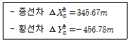
- 37°07‘00“
- 52°38’24”
- 52°53‘00“
- 307°07’00”
(정답률: 68%)
4. 지적측량에서 각을 측정할 경우 발생하는 오차가 아닌 것은?
- 착오
- 정오차
- 과밀오차
- 부정오차
(정답률: 89%)
5. 지적삼각보조점측량의 다각망도선법 Y망에서 1도선의 거리의 합이 3865.74m일 때 연결 오차의 허용범위는?
- 0.16m 이하
- 0.19m 이하
- 0.22m 이하
- 0.25m 이하
(정답률: 61%)
6. 관측값의 표준편차(σ) 경중률(ω)과의 관계로 옳은 것은? (단, n: 관측회수)
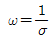
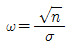
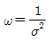
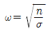
(정답률: 59%)
7. 좌표면적계산법에 따른 면적측량의 기준으로 옳은 것은?
- 평판측량방법으로 세부측량을 시행한 지역의 면적측정 방법이다.
- 도곽선의 길이에 0.3mm이상의 신축이 있을 경우 보정하여야 한다.
- 산출면적은 100분의 1m2까지 계산하여 10분의 1m2단위로 정한다.
- 경위의 측량방법으로 세부측량을 한 지역의 필지별 면적측정은 경계점 좌표에 따른다.
(정답률: 67%)
8. 대삼각(본점)측량에 관한 설명으로 옳지 않은 것은?
- 전국에 13개소의 기손을 설치하였다.
- 기선망의 수평각은 12대회 각관측법으로 실시하였다.
- 르장드르(Legendre)정리에 의하여 구과량을 계산하였다.
- 대삼각점을 평균 점간 거리 20km의 20개 삼각망으로 구성하였다.
(정답률: 72%)
9. 지적기준점측량의 절차가 올바르게 나열된 것은?
- 계획의 수립 → 선점 및 조표 → 준비 및 현지답사 → 관측 및 계산과 성과표의 작성
- 계획의 수립 → 준비 및 현지답사 → 선점 및 조표 → 관측 및 계산과 성과표의 작성
- 준비 및 현지답사 → 계획의 수립 → 선점 및 조표 → 관측 및 계산과 성과표의 작성
- 준비 및 현지답사 → 선점 및 조표 → 계획의 수립 → 관측 및 계산과 성과표의 작성
(정답률: 79%)
10. 지적측량 시행규칙 상 평판측량방법으로 세부측량을 한 경우 측량결과도에 적어야 할 사항이 아닌 것은?
- 신규등록 또는 등록전환하려는 경계선 및 분할경계선
- 측정점의 위치, 측량기하적 및 지상에서 측정한 거리
- 이동지의 경계선, 지번, 지목, 토지소유자의 등기의 연월일
- 측량 및 검사의 연월일, 측량자 및 검사자의 성명과 자격등급
(정답률: 59%)
11. 지적삼각점측량에서 수평각의 측각공차 기준으로 옳은 것은?
- 1방향각: 40초
- 1측회의 폐색: ±30초 이내
- 기지각과의 차: ±30초 이내
- 삼각형 내각관측의 합과 180°와의 차: ±40초
(정답률: 74%)
12. 실선과 허선을 각가 3mm로 연결하고, 허선에 0.3mm의 점 2개를 행정구역선은?
- 국계
- 시ㆍ도계
- 시ㆍ군계
- 동ㆍ리계
(정답률: 73%)
13. 그림에서 E1=20m, θ=150°일 때 S1은?
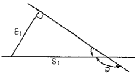
- 10.0
- 23.1
- 34.6
- 40.0
(정답률: 78%)
14. 부정오차의 특성으로 옳지 않은 것은?
- 정오차와 유사한 특성을 갖는다.
- 관측과정에서 부분적으로는 상쇄되기도 한다.
- 최소제곱법의 원리를 사용하여 처리하기도 한다.
- 원인이 명확하지 않으며, 오차의 크기가 불규칙적이다.
(정답률: 80%)
15. 교회법에 의하여 지적삼각보조점측량을 실시할 경우 수평각 관측의 윤곽도는?
- 0°, 90°
- 0°, 120°
- 0°, 45°, 90°
- 0°, 60°, 120°
(정답률: 70%)
16. 경위의측량방법에 따른 세부측량을 실시할 경우, 축척변경 시행지역의 측량결과도는 얼마의 축척으로 작성하여야 하는가? (단, 시ㆍ도지사의 승인을 얻는 경우는 고려하지 않는다.)
- 1/500
- 1/1000
- 1/3000
- 1/6000
(정답률: 65%)
17. 경계점좌표등록부 시행지역에서 지적도근점측량의 성과와 검사 성과의 연결교차는 얼마이내이어야 하는가?
- 0.10m 이내
- 0.15m 이내
- 0.20m 이내
- 0.25m 이내
(정답률: 70%)
18. 경위의측량방법에 따른 세부측량을 할 때, 토지의 경계가 곡선인 경우 직선으로 연결하는 곡선의 중앙종거의 길이 기준으로 옳은 것은?
- 5cm이상 10cm 이하
- 10cm 이상 15cm 이하
- 15cm 이상 20cm 이하
- 20cm 이상 25cm 이하
(정답률: 76%)
19. 5km 간격의 지적삼각점 간 거리측량을 1/50000의 정밀도로 실시하고자 할 때, 각과거리리의 균형을 위한 각측량오차의 한계는?
- 1초
- 4초
- 10초
- 15초
(정답률: 42%)
20. 특별소삼각원점의 좌표(종선좌표, 횡선좌표)는?
- (10000m, 30000m)
- (20000m, 30000m)
- (200000m, 600000m)
- (500000m, 200000m)
(정답률: 57%)
2과목: 응용측량
21. 터널 내 중심선 측량시 다보(도벨, dowel)를 설치하는 주된 이유는?
- 중심말뚝간 시통이 잘되도록 하기 위하여
- 차량 등에 의한 기준점 파손을 막기 위하여
- 후속작업을 위해 쉽게 제거할 수 있도록 하기 위하여
- 측량시 쉽게 발견할 수 있도록 하기 위하여
(정답률: 49%)
22. 다음 중 지질, 토양, 수자원, 삼림 조사 등의 판독작업에 가장 적합한 사진은?
- 적외선 사진
- 흑백 사진
- 반사 사진
- 위색 사진
(정답률: 79%)
23. 초점거리 210mm의 카메라로 비고가 50m인 구릉지에서 촬영한 사진의 축적이 1:15000이다. 이 사진의 비고에 의한 최대 기복변위량은?(단, 사진크기 : 23cm X 23cm, 종중복도 : 60%)
- ±0.15mm
- ±0.26mm
- ±1.5mm
- ±2.6mm
(정답률: 41%)
24. 그림과 같은 수평면과 45°의 경사를 가진 사면의 길이 (
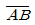
)가 25m이다. 이 사면의 경사를 30°로 완화한다면 사면의 길이 (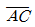
)는?(오류 신고가 접수된 문제입니다. 반드시 정답과 해설을 확인하시기 바랍니다.)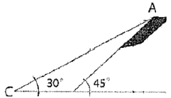
- 32.36m
- 33.36m
- 34.36m
- 35.36m
(정답률: 58%)
25. 종단곡선에서 상향기울기
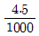
, 하향기울기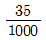
인 두 노선이 반지름 2000m의 원곡선상에서 교차할 때 곡선길이(L)는?- 49.5m
- 44.5m
- 39.5m
- 34.5m
(정답률: 38%)
26. 축척 1:10000의 항공사진에서 건물의 시차를 측정하니 상부가 19.33mm, 하부가 16.83mm이었다면 건물의 높이는? (단, 촬영고도=800mm, 사진 상의 기선길이=68mm)
- 19.4m
- 29.4m
- 39.4m
- 49.4m
(정답률: 60%)
27. 1:25000 지형도상에서 어떤 산정상으로부터 산기슭까지의 수평거리를 측정하니 48mm이었다. 산정상의 표고는 454m, 산기슭의 표고가 12m일 때 이 사면의 경사는? (단, 사면의 경사는 동일한 것으로 가정한다.)
- 1/2.7
- 1/4.0
- 1/5.7
- 1/9.2
(정답률: 56%)
28. 각관측 장비를 이용하여 고저각을 관측하고 두 지점간의 수평거리를 알고 있을 때 적용할 수 있는 간접 수준 측량의 방법은?
- 삼각수준측량
- 스타디아 측량
- 수직표척에 의한 측량
- 수평표척에 의한 측량
(정답률: 61%)
29. 지성선 중에서 빗물이 이것을 따라 좌우로 흐르게 되는 선으로 지표면이 높은 곳의 꼭대기 점을 연결한 선은?
- 합수선(계곡선)
- 경사변환선
- 분수선(능선)
- 최대경사선
(정답률: 65%)
30. 중력장을 고려한 수직위치에 대한 설명으로 틀린 것은?
- 기하학적 수직위치인 정표고는 직접고저측량에 의하여 두 점간의 비고를 구하려 할 때, 중력 등퍼텐셜면의 비평형성을 고려하여야 한다.
- 어느 지점의 수직위치는 일반적으로 지오이드로부터 그 지점에 이르는 연직선의 길이인정 표고로 표시한다.
- 여러 구간으로 나누어 직접고저측량을 실시할 경우, 고저측량의 비고 요소의 합은 정표고의 차와 정확히 일치한다.
- 직접고저측량을 실시할 경우, 고저측량만으로만 물리적인 의미를 가질 수 없고 중력측량과 결합해야 한다.
(정답률: 54%)
31. 표고를 알고 있는 기지점에서 중요한 지성선을 따라 측선을 설치하고, 측선을 따라 여러 점의 표고와 거리를 측량하여 등고선을 측량하는 방법은?
- 방안법
- 횡단점법
- 영선법
- 종단점법
(정답률: 55%)
32. 레벨의 중심에서 100m 떨어진 곳에 표척을 세워 1.921m를 관측하고 기포가 5눈금 이동 후에 1.994m를 관측하였다면 이 기포관의 1눈금 이동에 대한 경사각(감도)은?
- 약 40“
- 약 30”
- 약 20“
- 약 10”
(정답률: 55%)
33. GPS측량에서 나타나는 오차의 종류 중 현재 영향을 받지 않는 오차는?
- 위성시계오차
- 위성궤도오차
- 대기권오차
- 선택적가용성(SA)오차
(정답률: 72%)
34. GNSS 측량에서 의사거리(pseudo-range)에 대한 설명으로 옳지 않은 것은?
- 인공위성과 지상수신기 사이의 거리 측정값이다.
- 대류권과 이온층의 신호지연으로 인한 오차의 영향력이 제거된 관측값이다.
- 기하학적인 실제거리와 달라 의사거리라 부른다.
- 인공위성에서 송신되어 수신기로 도착된 신호의 송신시간을 PRN 인식 코드로 비교하여 측정한다.
(정답률: 62%)
35. 노선측량에서 노선선정을 할 때 고려사항으로 가장 우선시 되는 것은?
- 교통량 및 경제성
- 건설비와 측량비
- 곡선설치의 난이도
- 공사시간
(정답률: 63%)
36. 터널측량의 작업 단계 중 지표에 설치된 중심선을 기준으로 하여 터널의 입구에서 굴착을 시작하여 굴착이 진행됨에 따라 터널내의 중심선을 설정하는 작업은?
- 지표설치
- 지하설치
- 조사
- 예측
(정답률: 47%)
37. 노선 측량에서 시공이 완료될 때까지 반드시 보존되어야 할 측점은?
- 교점(I,P)
- 곡선중점(S.P)
- 곡선시점(B.C)
- 곡선종점(E.C)
(정답률: 61%)
38. 삼각형의 세 꼭지점의 좌표가 A(3,4), B(6,7), C(7,1)일 때에 삼각형의 면적은? (단, 좌표의 단위는 m이다.)
- 12.5m2
- 11.5m2
- 10.5m2
- 9.5m2
(정답률: 63%)
39. 사진의 특수 3점은 주점, 등각점, 연직점을 말하는데, 이 특수 3점이 일치하는 사진은?
- 수평사진
- 저각도경사사진
- 고각도경사사진
- 엄밀수직사진
(정답률: 67%)
40. GNSS 위치결정에서 정확도와 관련된 위성의 상태에 관한 내용으로 옳지 않은 것은?
- 결정좌표의 정확도는 정밀도 저하율(DOP)과 단위관측정확도의 곱에 의해 결정된다.
- 3차원 위치는 TDOP(Time DOP)에 의해 정확도가 달라진다.
- 최적의 위성배치는 한 위성은 관측자의 머리 위에 있고 다른 위성의 배치가 각각 120°를 이룰 때이다.
- 높은 DOP는 위성의 배치 상태가 나쁘다는 것을 의미한다.
(정답률: 60%)
3과목: 토지정보체계론
41. 백터 자료구조에 비하여 래스터 자료구조가 갖는 장ㆍ단점으로 옳지 않은 것은?
- 자료의 구조가 단순하다.
- 그래픽 자료의 양이 방대하다.
- 여러 레이어의 중첩이 용이하다.
- 복잡한 자료를 최소한의 공간에 저장시킬 수 있다.
(정답률: 57%)
42. 도로, 상하수도, 전기시설 등의 자료를 수치지도화하고 시설물의 속성을 입력하여 데이터베이스를 구축함으로써 시설물 관리활동을 효율적으로 지원하는 시스템은?
- FM(Facility Management)
- LIS(Land Information System)
- UIS(Urban Information System)
- CAD(Computer-Aided Drafting)
(정답률: 70%)
43. 지방자치단체가 지적공부 및 부동산종합공부정보를 전자적으로 관리ㆍ운영하는 시스템은?
- 한국토지정보시스템
- 부동산종합공부시스템
- 지적행정시스템
- 국가공간정보시스템
(정답률: 74%)
44. 필지식별번호에 관한 설명으로 틀린 것은?
- 필지에 관련된 모든 자료의 공통적 색인번호의 역할을 한다.
- 필지의 등록사항 변경 및 수정에 따라 변화할 수 있도록 가변성이 있어야 한다.
- 각 필지의 등록사항의 저장과 수정 등을 용이하게 처리할 수 있는 고유번호를 말한다.
- 토지관련 정보를 등록하고 있는 각종대장과 파일 간의 정보를 연결하거나 검색하는 기능을 향상시킨다.
(정답률: 75%)
45. 토지정보체계의 특징에 해당되지 않는 것은?
- 지형도 기반의 지적정보를 대상으로 하는 위치참조 체계이다.
- 토지이용계획 및 토지관련 정책자료 등 다목적으로 활용이 가능하다.
- 토지 1필지의 이동정리에 따른 정확한 자료가 저장되고 검색이 편리하다.
- 지적도의 경계점 좌표를 수치로 등록함으로써 각종 계획업무에 활용할 수 있다.
(정답률: 62%)
46. 지적도 전산화 작업으로 구축된 도면의 데이터별 레이어 번호로 옳지 않은 것은?
- 지번 : 10
- 지목 : 11
- 문자정보 : 12
- 필지경계선 : 1
(정답률: 57%)
47. 다음 중 평면직각좌표계의 이점이 아닌 것은?
- 지도 구면상에 표시하기가 쉽다.
- 관측값으로부터 평면직각좌표를 계산하기 편리하다.
- 평판측량, 항공사진측량 등 많은 측량작업과 호환성이 좋다.
- 평면직각좌표로부터 거리, 수평각, 면적을 계산하기 편리하다.
(정답률: 65%)
48. 토탈스테이션과 지적측량 운영프로그램 등이 설치된 컴퓨터를 연결하여 세부측량을 수행함으로써 필지경계 정보를 취득하는 측량방법은?
- GNSS
- 경위의측량
- 전자평판측량
- 네트워크 RTK 측량
(정답률: 70%)
49. 부동산종합공부시스템의 하부 시스템 중 토지민원발급 시스템에 대한 설명으로 옳지 않은 것은?
- 토지민원발급 시스템은 현재 RN까지만 민원열람 및 발급이 가능한 상황이다.
- 개별공시지가 확인서의 발급수수료를 관리하고 발급지역 및 발급지역별 사용자를 등록하여 관리할 수 있다.
- 지적 및 토지관리 업무를 통하여 등록 및 민원인에게 실시간으로 제공하는 시스템이다.
- 시ㆍ군ㆍ구 토지민원발급 담당자가 수행하는 업무를 토지민원발급 시스템을 이용하여 효율적이고 체계적인 방식으로 처리할 수 있도록 지원하는 시스템이다.
(정답률: 65%)
50. 지리정보의 특성인 공간적 위상관계에 대한 설명으로 옳지 않은 것은?
- 근접성은 대상물의 주변에 존재하는 대상물과의 관계를 의미한다.
- 연결성은 실제로 연결된 대상물들 사이의 관계를 의미한다.
- 근접성은 서로 다른 계층에서 서로 다르게 인식될 수 있는 대상물의 관계를 의미한다.
- 공간적 위상관계의 특성을 바탕으로 조건에 만족하는 지역이나 조건을 검색 및 분석 할 수 있다.
(정답률: 73%)
51. 관계형 데이터베이스관리시스템에서 자료를 만들고 조회할 수 있는 것은?
- ASP
- JAVA
- Perl
- SQL
(정답률: 77%)
52. 벡터지도의 오류 유형 및 이에 대한 설명으로 틀린 것은?
- Overshoot: 어떤 선분까지 그려야 하는데 그 선분을 지나쳐 그려진 경우
- Undershoot: 어떤 선분이 아래에서 위로 그려져야 하는데 수평으로 그려진 경우
- 레이블입력오류: 지번 등이 다르게 기입되는 경우 또는 없거나 2개가 존재하는 경우
- Sliver polygon: 지적필지를 표현할 때 필지가 아닌데도 경계불일치로 조그만 폴리곤이 생겨 필지로 인식되는 오류
(정답률: 79%)
53. 벡터데이터의 특징이 아닌 것은?
- 자료의 갱신과 유지관리가 편리하다.
- 격자간격에 의존하여 면으로 표현된다.
- 각기 다른 위상구조로 중첩기능을 수행하기 어렵다.
- 좌표를 이용하여 복잡한 자료를 최소의 공간에 저장할 수 있다.
(정답률: 70%)
54. 다음 GIS작업 흐름도에서 A, B, C부분에 들어가야 할 내용과 분석방법으로 옳은 것은?
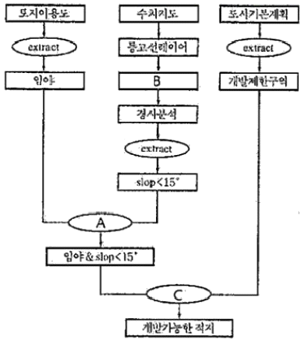
- A: Extract, B: DEM, C: Erase
- A: Extract, B: Buffer polygon, C: Intersect
- A: Intersect, B: DEM, C: Erase
- A: Intersect, B: Buffer polygon, C: Extract
(정답률: 61%)
55. 다음은 DEM데이터의 DN값이다. A→B방향의 경사도로 옳은 것은? (단, 셀의 크기는 100m×100m이다.)
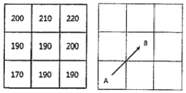
- -14.2%
- -20.0%
- +14.2%
- +20.0%
(정답률: 49%)
56. 공간데이터 분석에 대한 설명으로 옳지 않은 것은?
- 질의검색이란 사용자가 특정 조건을 제시하면 데이터베이스 내에서 주어진 제시하면 데이터베이스 내에서 주어진 조건을 만족하는 레코드를 찾아내는 기법이다.
- 중첩분석은 도형자료에 적용되는 것으로 하나의 레이어 또는 커버리지 위에 다른 레이어를 올려놓고 비교하고 분석하는 기법이다.
- 버퍼는 점(Point), 선(Line), 면(Polygon)의 공간객체 중 면(Polygon)에 해당하는 객체에서만 일정한 폭을 가지 구역을 정하는 기법이다.
- 네트워크 분석은 서로 연관된 일련의 선형형상물로 도로, 같은 교통망이나 전기, 전화, 하천과 같은 연결성과 경로를 분석하는 기법이다.
(정답률: 71%)
57. 행정구역의 명칭이 변경된 때에 지적소관청은 시ㆍ도지사를 경유하여 국토교통부장관에게 행정구역변경일 몇 일전까지 행정구역의 코드변경을 요청하여야 하는가?
- 5일
- 10일
- 20일
- 30일
(정답률: 66%)
58. 관계형 데이터베이스모델(relational database model)의 기본 구조 요소로 옳지 않은 것은?
- 소트(sort)
- 행(record)
- 테이블(table)
- 속성(attribute)
(정답률: 68%)
59. 파일처리시스템에 비하여 데이터베이스 관리시스템(DBMS)이 갖는 특징으로 옳지 않은 것은?
- 시스템의 구성이 단순하여 자료의 손실 가능성이 낮다.
- 다른 사용자와 함께 자료호환을 자유롭게 할 수 있어 효율적이다.
- DBMS에서 제공되는 서비스 기능을 이용하여 새로운 응용프로그램의 개발이 용이하다.
- 직접적으로 사용자와의 연계를 위한 기능을 제공하여 복잡하고 높은 수준의 분석이 가능하다.
(정답률: 71%)
60. 속성자료를 설명한 내용으로 옳지 않은 것은?
- 속성자료는 점, 선, 면적의 형태로 구성되어 있다.
- 속성자료는 각종 정책적ㆍ경제적ㆍ행정적인 자료에 해당하는 글자와 숫자로 구성된 자료이다.
- 범례는 도형자료의 속성을 설명하기 위한 자료로 도로명, 심벌, 주기 등으로 글자, 숫자, 기호, 색상으로 구성되어 있다.
- 경계점좌표등록부는 토지소재, 지번, 좌표, 토지의 고유번호, 도면번호, 경계점좌표 등록부의 장번호, 부호 및 부호도 등에 대한 사항이 속성정보에 해당한다.
(정답률: 71%)
4과목: 지적학
61. 아래의 설명에 해당하는 토지제도는?
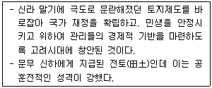
- 경무전
- 반전제
- 역분전
- 전부전
(정답률: 74%)
62. 토지조사사업 당시 토지소유자와 강계를 시정하기에 앞서 진행한 절차는?
- 조선총독부의 심의
- 토지조사부의 심의
- 중앙토지위원회의 자문
- 지방토지위원회의 자문
(정답률: 49%)
63. 다음 중 입안제도(立案制度)에 대한 설명으로 옳지 않은 것은?
- 토지매매계약서이다.
- 관에서 교부하는 형식이었다.
- 조선 후기에는 백문매매가 성행하였다.
- 소유권 이전 후 100일 이내에 신청하였다.
(정답률: 51%)
64. 지상 경계를 결정하기 곤란한 경우에 경계결정의 방법에 대한 일반적인 원칙(이론)이 아닌 것은?
- 보완설
- 점유설
- 지배설
- 평분설
(정답률: 56%)
65. 지적재조사의 목적과 가장 거리가 먼 것은?
- 지적공부의 질적 향상
- 합리적인 국가 경계 향상
- 토지의 경계 복원력 향상
- 지적불부합지 문제의 해석
(정답률: 63%)
66. 토지소유권 권리의 특성이 아닌 것은?
- 탄력성
- 혼일성
- 항구성
- 불완전성
(정답률: 69%)
67. 간주지적도에 등록된 토지는 토지대장과는 별도로 대장을 작성하였다. 다음 중 그 명칭에 해당하지 않는 것은?
- 산토지대장
- 별책토지대장
- 임야토지대장
- 올호토지대장
(정답률: 72%)
68. 지번설정에서 사행식 방법이 가장 적합한 지역은?
- 경지정리지역
- 택지조성지역
- 도로변의 주택구획지역
- 지형이 불규칙한 농경지
(정답률: 71%)
69. 토렌스 시스템의 기본 이론이 아닌 것은?
- 거울이론
- 보험이론
- 지가이론
- 커튼이론
(정답률: 82%)
70. 토지조사사업에 따른 지적제도의 확립에 대한 설명으로 틀린 것은?
- 토지의 경계와 소유권은 고등토지조사위원회에서 사정하였다.
- 사정은 강력한 행정처분을 확정하는 원시취득의 효력이 있었다.
- 토지의 일필지에 대한 위치 및 형상과 경계를 측정하여 지적도에 등록하였다.
- 측량성과에 의거 토지의 소재, 지번, 지목, 소유권 등을 조사하여 토지대장에 등록하였다.
(정답률: 68%)
71. 지번에 결번이 생겼을 경우 처리하는 방법은?
- 결번된 토지 대장 카드를 삭제한다.
- 결번 대장을 비치하여 영구히 보존한다.
- 결번된 지번을 삭제하고 다른 지번을 설정한다.
- 신규등록 시 결번을 사용하여 결번이 없도록 한다.
(정답률: 75%)
72. 우리나라 법정지목을 구분하는 중심적 기준은?
- 토지의 성질
- 토지의 용도
- 토지의 위치
- 토지의 지형
(정답률: 86%)
73. 다음 중 우리나라 지적제도의 원리에 해당하는 것은?
- 성립 요건주의
- 직권 등록주의
- 소극적 등록주의
- 형식적 심사주의
(정답률: 73%)
74. 특별한 기준을 두지 않고 당사자의 신청순서에 따라 토지등록부를 편성하는 방법은?
- 물적 편성주의
- 인적 편성주의
- 연대적 편성주의
- 인적ㆍ물적 편성주의
(정답률: 73%)
75. 다음 중 지적공부의 성격이 다른 것은?
- 산토지대장
- 토지조사부
- 별책토지대장
- 올호토지대장
(정답률: 82%)
76. 1807년에 나폴레옹이 지적법을 발효시키고 대단지 내의 필지에 대한 조사를 위하여 발족된 위원회에서 프랑스 전 국토에 대하여 시행한 세부 사업에 해당하지 않는 것은?
- 소유자 조사
- 필지측량 실시
- 필지별 생산량 조사
- 축척 1/5000 지형도 작성
(정답률: 64%)
77. 지적의 구성요소 중 외부요소에 해당되지 않는 것은?
- 법률적 요소
- 사회적 요소
- 지리적 요소
- 환경적 요소
(정답률: 53%)
78. 다목적 지적의 구성요건에 해당하지 않는 것은?
- 기본도
- 지적도
- 측량계산부
- 측지기준망
(정답률: 69%)
79. 적극적 등록주의(positive system) 지적제도에 있어서 토지 등록 방법상 그 내용으로 하지 않는 것은?
- 직권주의
- 실질적 심사
- 형식적 심사
- 모든 토지 등록
(정답률: 67%)
80. 토지조사사업 당시 일필지조사 사항의 업무가 아닌 것은?
- 지목의 조사
- 지번의 조사
- 지주의 조사
- 분쟁지의 조사
(정답률: 60%)
5과목: 지적관계법규
81. 지적소관청이 토지의 표시 변경에 관한 등기를 할 필요가 있을 경우 관할 등기관서에 등기촉탁을 하여야 하는 사유에 해당하지 않는 것은?
- 축척변경
- 신규등록
- 바다로 된 토지의 등록말소
- 행정구역개편으로 인한 지번변경
(정답률: 62%)
82. 등록전환측량에 대한 설명으로 옳지 않은 것은?
- 토지대장에 등록하는 면적은 임야대장의 면적을 그대로 따른다.
- 등록전환 할 일단의 토지가 2필지 이상으로 분할 될 경우 1필지로 등록전환 후 지목별로 분할하여야 한다.
- 1필지 전체를 등록전환 할 경우에는 임야대장등록사항과 토지대장등록사항의 부합여부를 확인해야 한다.
- 경계점좌표등록부를 비치하는 지역과 연접되어 있는 토지를 등록전환하려면 경계점좌표등록부에 등록하여야 한다.
(정답률: 72%)
83. 국제기관 및 외국정부의 부동산등기용 등록번호를 지정ㆍ고시하는 자는?
- 외교부장관
- 국토교통부장관
- 행정안전부장관
- 출입국ㆍ외국인정책본부장
(정답률: 70%)
84. 도로명주소법에서 사용하는 용어의 정의로 옳지 않은 것은?
- “기초번호”란 도로구간에 행정안전부령으로 정하는 간격마다 부여된 번호를 말한다.
- “상세주소”란 건물등 내부의 독립된 거주ㆍ활동 구역을 구분하기 위하여 부여된 동(棟)번호, 층수 또는 호(號)수를 말한다.
- “도로명주소”란 도로명, 건물번호 및 상세주소(상세주소가 있는 경우만 해당한다)로 표기하는 주소를 말한다.
- “사물주소”란 도로명과 건물번호를 활용하여 건물 등에 해당하지 아니하는 시설물의 위치를 특정하는 정보를 말한다.
(정답률: 55%)
85. 공간정보의 구축 및 관리 등에 관한 법령상 국토교통부장관의 권한을 국토지리정보원장에게 위임하는 사항이 아닌 것은?
- 기본측량성과의 정확도 검증 의뢰
- 측량업자의 지위 승계 신고의 수리
- 측량업의 휴업ㆍ폐업 등의 신고 수리
- 지적측량업자의 등록취소에 대한 청문
(정답률: 59%)
86. 공간정보의 구축 및 관리 등에 관한 법률에서 규정하고 있는 경계의 의미로 옳은 것은?
- 계곡ㆍ능선 등의 자연적 경계
- 토지소유자가 표시한 지상경계
- 지적도나 임야도에 등록한 경계
- 지상에 설치한 담장ㆍ둑 등의 인위적인 경계
(정답률: 79%)
87. 경계점좌표등록부의 등록사항이 아닌 것은?
- 지목
- 지번
- 토지의 소재
- 토지의 고유번호
(정답률: 62%)
88. 경위의 측량방법에 따른 세부측량에 관한 설명으로 옳은 것은?
- 거리측정단위는 1미터로 한다.
- 농지의 구획정리 시행지역의 측량결과도의 축척을 500분의 1로 한다.
- 방향관측법인 경우에 수평각의 관측은 1측회의 페색을 하지 아니할 수 있다.
- 1방향각 수평각의 측각공차는 60초 이내로 하고, 1회 측정각과 2회 측정각의 평균값에 대한 교차는 30초 이내로 한다.
(정답률: 42%)
89. 축척변경에 따른 청산금의 납부고지 등에 관한 설명으로 옳은 것은?
- 지적소관청은 청산금의 수령통지를 한날부터 9개월 이내에 청산금을 지급하여야 한다.
- 지적소관청은 청산금의 결정을 공고한 날부터 1개월 이내에 청산금의 수령통지를 하여야 한다.
- 지적소관청은 청산금의 결정을 공고한 날부터 1개월 이내에 토지소유자에게 납부고지를 하여야 한다.
- 청산금의 납부고지를 받은 자는 그 고지를 받은 날부터 6개월 이내에 청산금을 지적소관청에 내야 한다.
(정답률: 73%)
90. 지목설정에 관한 설명으로 옳지 않은 것은?
- 종합운동장 부지의 지목은 “체육용지”로 한다.
- 모래땅, 습지, 황무지의 지목은 “잡종지”로 한다.
- 과수원 내 주거용 건축물 부지의 지목은 “대”로 한다.
- 축산업 및 낙농업을 하기 위하여 초지를 조성한 토지의 지목은 “목장용지”로 한다.
(정답률: 65%)
91. 밭에 있는 비닐하우스에 채소를 재배하는 토지와 같은 지목을 갖는 것은?
- 소류지
- 죽림지ㆍ간석지
- 식용을 목적으로 죽순을 재배하는 토지
- 물을 상시적으로 이용하여 미나리를 재배하는 토지
(정답률: 67%)
92. 광파기측량방법에 따라 다각망도선법으로 지적삼각보조점측량을 할 때의 기준으로 옳은 것은?
- 결합도선에 의하고 부득이 한때에는 왕복도선에 의할 수 있다.
- 3점 이상의 기지점을 포함한 결합다각방식에 의한다.
- 1도선의 거리는 3킬로미터 이상 5킬로미터 이하로 한다.
- 1도선의 점의 수는 기지점과 교점을 제외하고 5점 이하로 한다.
(정답률: 71%)
93. 다음 설명의 ( )안에 공통으로 들어갈 알맞은 용어는?
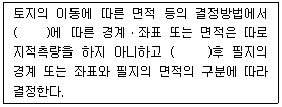
- 등록전환
- 분할
- 복원
- 합병
(정답률: 75%)
94. 공간정보의 구축 및 관리 등에 관한 법률에서 규정한 용어의 정의로 옳지 않은 것은?
- “지번”이란 필지에 부여하여 등기부등본에 등록한 번호를 말한다.
- “필지”란 대통령령으로 정하는 바에 따라 구획되는 토지의 등록단위를 말한다.
- “지목”이란 토지의 주된 용도에 따라 토지의 종류를 구분하여 지적공부에 등록한 것을 말한다.
- “지번부여지역”이란 지번을 부여하는 단위지역으로서 동ㆍ리 또는 이에 준하는 지역을 말한다.
(정답률: 58%)
95. 토지이동을 수반하지 않고 토지대장을 정리하는 경우는?
- 등록전환정리
- 토지분할정리
- 토지합병정리
- 소유권변경정리
(정답률: 62%)
96. 지적측량수행자가 손해배상책임을 보장하기 위하여 보증보험에 가입하여야 하는 금액기준으로 옳은 것은?
- 지적측량업자: 1억원 이상
- 지적측량업자: 5천만원 이상
- 한국국토정보공사: 5억원 이상
- 한국국토정보공사: 10억원 이상
(정답률: 80%)
97. 공간정보의 구축 및 관리 등에 관한 법률상 축척변경위원회에 대한 설명으로 옳지 않은 것은?
- 위원장은 위원 중에서 지적소관청이 지명한다.
- 축척변경 시행지역의 토지소유자가 5명 이하일 때에는 토지소유자 전원을 위원으로 위촉하여야 한다.
- 축척변경위원회는 10명 이상 20명 이하의 위원으로 구성하되, 위원의 3분의 1이상을 토지소유자로 하여야 한다.
- 위원은 해당 축척변경 시행지역의 토지소유자로서 지역 사정에 정통한 사람, 지적에 관하여 전문지식을 가진 사람 중에서 지적소관청이 위촉한다.
(정답률: 72%)
98. 국토의 계획 및 이용에 관한 법률에 따른 기반시설의 종류에 해당하지 않는 것은?
- 환경기초시설
- 보건위생시설
- 물류ㆍ유통정비시설
- 공공ㆍ문화체육시설
(정답률: 59%)
99. 부동산등기법상 등기부등본의 갑구 또는 을구의 기재사항으로 옳지 않은 것은?
- 지목
- 권리자
- 등기원인 및 그 연월일
- 접수연월일 및 접수번호
(정답률: 59%)
100. 국토의 계획 및 이용에 관한 법률의 목적으로 가장 옳은 것은?
- 고도의 경제 성장 유지
- 국토 및 해양의 이용 질서 확립
- 환경보전 및 중앙집권체제의 강화
- 공공복리의 증진과 국민의 삶의 질 향상
(정답률: 64%)